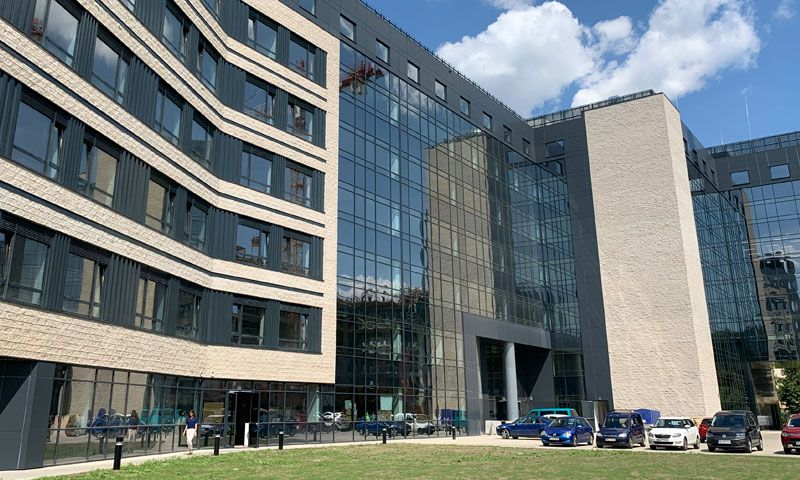
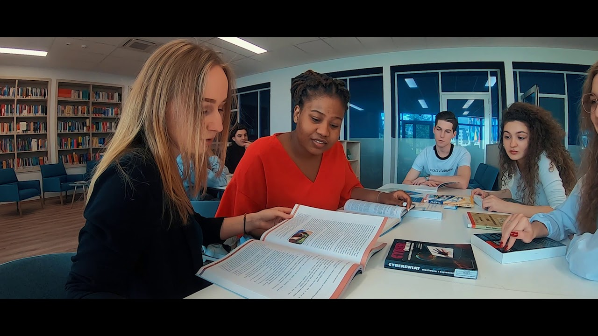

Чехия, Кутна-Гора. Королевский город – Juventus School – Экономико-гуманитарный Университет в Варшаве ЮВЕНТУС - языковая школа, учреждённая Юлией Улеевой в прекрасной атмосфере города Кутна-Гора, который находится в 50 километрах от Праги.
Почему школа называется «Ювентус»?
В переводе с латинского языка «ювентус» означает «молодость, молодёжь». Девиз нашей школы: всё для молодёжи! Желание предоставить качественное образование, широкий спектр услуг, твёрдую поддержку молодым людям в начале их жизненного пути, безопасное и далёкое от соблазнов большого города проживание — всё это послужило стимулом для открытия нашей школы.
Какие выгоды школы «Ювентус»?
Годовые, полугодовые и краткосрочные курсы обучения чешского языка, подготовка к нострификационным и вступительным экзаменам в ВУЗы — всё это в прекрасной атмосфере исторического королевского города Кутна-Гора.
Мы разработали уникальную программу «all inclusive», в рамках которой удовлетворяем самые необходимые нужды иностранных студентов в Чехии; не просто
Все это включено в нашу программу all inclusive!
Как оплатить регистрационный взнос?
В ответ на Вашу заявку на обучение мы пошлем Вам счет-фактуру с указанием реквизитов для оплаты. Чтобы составить счет-фактуру нам нужно будет знать имя-фамилию студента по загранпаспорту (латинскими буквами), номер загранпаспорта, дату рождения, гражданство.
Когда нужно заплатить за обучение?
Оставшаяся цена курса оплачивается после одобрения чешской визы. Например, стандартный курс стоит 3500 евро, оплачивается при регистрации 300 евро, остальные 3200 евро оплачиваете потом, когда студенту придет одобрение с чешского консульства на получение визы.
Будет ли со мной заключен договор об обучении?
После оплаты регистрационного сбора подписывается договор об обучении. Если студент совершеннолетний, то договор студент подписывает лично. Договор можно подписать на расстоянии: распечатать, прочитать, подписать в конце, отсканировать и послать на Е-мэйл школы. Или можно подписать формой проставления электронной подписи в формате PDF. Если студент несовершеннолетний, то договор подписывает один из родителей. Для составления такого договора нам нужно знать: имя-фамилия студента, дата рождения студента, адрес регистрации студента, имя-фамилия родителя, дата рождения родителя, паспортные данные родителя, адрес регистрации родителя.
Сколько стоят курсы и что включено?
Полугодовой стандартный курс стоит 1880 евро, комплексный курс за 2555 евро, курс all inclusive за 3755 евро. Годовые курсы стоят от 3500 евро стандартный курс, комплексный за 4255 евро, а курс «all inclusive» за 6255 евро.
Стандартный курс включает: 800 чешского языка (полугодовой курс рассчитан на 400 часов), визовая поддержка, переводы всех документы, трансфер с аэропорта (встреча в аэропорту и доставка на место проживания), чешская сим-карта.
Комплексный курс обогащен ко всему перечисленному ранее еще и дополнительными занятиями по подготовке к нострификации, оплата госпошлины за нострификацию, 70 академ. часов профильных занятий для поступления в ВУЗ, тур. поездки по Чехии: Острава, Карловы Вары, Чешский Крумлов.
Курс all inclusive к всему уже вышеперечисленному включает: бесплатное проживание на год в кампусе школы, дополнительные занятия по проф. подготовке 140 часов для поступления в ВУЗ, страхование VZP (единственная страховка, которая принимается всеми докторами в Чехии и не имеет лимита на мед. обслуживание), тур. поездки в Австрию и во Францию.
Что я получу после окончания курсов?
По окончанию наших курсов Вы получите: сертификат чешского языка, сертификат признания Вашего аттестата (нострификацию), поступление в ВУЗ, помощь в сборе документов для продления чешской визы, не выезжая из Чехии.
Как проходит обучение?
Обучение проходит в очной форме по 5 академических часов в день, за полугодие 400 часов, за учебный год 800 часов. Начало учебного процесса обычно в середине сентября и конец занятий - в конце мая. Зимние каникулы приходятся на чешское рождество и Новый год, а именно каждый год приблизительно от 20 декабря до 8 января. Летние каникулы начинаются от 1 июня и длятся до конца августа. Программы обучения отвечают требованиям директивы CEFR - Общеевропейские компетенции владения иностранным языком. Обучение основано на индивидуальном коммуникативном подходе опытных преподавателей в маленьких группах. Уровень владения языком проверяется в течение всего обучения. Обучение завершается итоговым выпускным экзаменом, состоящим из устной и письменной части.
Кто работает и преподает в школе?
Основатель школы - Юлия Бенчан Улеева, которая, также как и вы, приехала в Чехию на учебу в 1999 году. От 2001 года начала помогать с поступлением в чешские ВУЗы и оформлением студенческих виз, от 2008 до 2014 года работала как представитель государственного Технического университета в Либерце по набору иностранных студентов и оформлению виз. От 2010 года по нынешнее время работает судебным экспертом-переводчиком русского/чешского языка.
Директором и гарантом учебного процесса является пани Анна Бенешова, которая уже более 35 лет работает в области преподавания чешского языка для иностранцев. Анна Бенешова руководила подготовительными программами при разных университетах и школах в Европе и в Чехии. В школе «Ювентус» пани Бенешова работает со дня её основания.
В настоящее время в школе преподают: 4 учительницы чешского языка, 2 учителя английского языка, 1 учитель биологии/химии и 1 учитель математики/физики. Также студентам помогают кураторы, которые сопровождают студентов на учебу/с учебы, в поездках по Чехии и заграницу - полностью водят за руку.
Можно ли поменять программу курса во время учебы, по приезде в Чехию?
Конечно, можно для начала подать заявку на полугодовой курс и/или на стандартный курс, где цена совсем низкая и не пугает, а в дальнейшем продлить обучение и/или расширить программу.
Если примите решение в пользу нашей стандартной программы, то все услуги (страхование, проживание, тур. поездки, нострификация аттестата и т.д.) можно дополнительно приобрести в течение учебного года. Например, цена проживания в комнате по 2 человека составляет 100 евро в месяц за человека. Годовая мед. страховка VZP, которая является самой лучшей, отдельно стоит 550 евро, при этом студент может приобрести и другую страховку от коммерческих компаний за 300-500 евро, мы Вам с этим поможем. Услуги, связанные с подготовкой и сдачей нострификации стоят 580 евро. Тур. поездки по Чехии и в Австрию стоят примерно по 50 евро, в Париж 150 евро (включено: транспорт, ночь в отеле и завтрак).
Как я смогу приехать в Чехию?
Чтобы приехать на учебу в Чехию необходимо иметь чешскую визу или визу другой страны шенгенского соглашения. Мы помогаем студентам подготовить набор документов для получения чешской визы, записываем в консульство Чехии для подачи на визу, проводим консультации и подготовку для собеседования в консульстве.
Где подать на визу?
Заявление на чешскую визу необходимо подать в Консульском отделе Посольства Чехии в стране проживания студента согласно его адресу постоянной регистрации.
Какую чешскую визу я получу?
Наши студенты, оканчивающие и/или окончившие минимально среднее полное образование, получают студенческую визу на год/полгода тип DV/C/24, кратко именуемую «тип 24». Ребята, окончившие только основную среднюю школу (только 9 классов), могут получить визу тип «иное». Но, к сожалению, в настоящее время из-за ограничений, связанных с пандемией COVID-19, приём документов на визу тип «иное» приостановлен на неопределённый срок.
Какие документы нужны для визы?
Некоторые документы для визы пошлём мы: подтверждение о принятии на учёбу, гарантийное письмо университета на время пандемии, подтверждение о предоставлении жилья.
Но некоторые документы Вам нужно подготовить самим: загранпаспорт, гражданский паспорт, 2 фотографии паспортного формата, справка о несудимости, справка из банка о деньгах (на счету должно быть не менее 3.800,- евро, а если ребенок является несовершеннолетним в течение всего года предполагаемого обучения, то половина этой суммы) и ксерокопия платежной карты, согласие обоих родителей на выезд (если ребёнок несовершеннолетний).
Все документы должны быть переведены на чешский язык судебным переводчиком Чехии! В рамках наших программ мы переведём все Ваши документы на чешский язык бесплатно.
Что такое нострификация? И как вы можете её гарантировать?
Нострификация — это признание равноценности заграничного аттестата в Чехии. Для этого нужно сдать государственные экзамены минимально по 3 предметам. Это как ЕГЭ, ОРТ или ЕНТ, но разница в том, что не Вы выбираете предметы, а Вам назначает сам чешский департамент образования экзамены по тем предметам, которые Вы знаете хуже всего!
Нострификацию мы поможем вам успешно сдать с первого раза и получить сертификат признания аттестата во время прохождения наших курсов. Подготовка проходит по уникальной методике, разработанной основательницей нашей школы. Поэтому мы гарантируем 100% нострификацию. Мы занимаемся со своими студентами по предметам, которые будут на нострификационном экзамене, с каждым индивидуально по каждому предмету.
Какие ВУЗы есть в Чехии?
В Чехии существуют государственные университеты, где обучение бесплатное, и частные Вузы, где обучение платное. Платным обучение может быть и в государственных ВУЗах, если учиться в английском языке. Для бесплатного обучения в государственном чешском ВУЗе необходимо владеть чешским языком. Тогда Вы имеете право учиться бесплатно на таких же правах как чехи.
Как поступить в Чехии в ВУЗ?
Чтобы поступить в Вузы Чехии, на первом этапе нужно поступить на курсы чешского языка, получить визу в Чехию, и во время этого первого года пребывания в Чехии пройти процессом нострификации (признание заграничного аттестата в Чехии). После окончания курса, овладев чешским языком, Вы можете учиться в любом государственном Вузе Чехии бесплатно. Но, конечно, нужно успешно сдать вступительные экзамены. Правда, есть университеты, которые принимают студентов без вступительных экзаменов, только на основании аттестата и нострификации. Мы всегда советуем студентам подавать заявку дополнительно и в такие ВУЗы, для подстраховки.
Вы помогаете с выбором университета и с поступлением? Каковы гарантии? Мы поможем выбрать университет, подать заявку, подготовится к вступительным экзаменам. Для этого в первом семестре проходят дополнительно занятия по нострификации (признанию заграничного аттестата) и сдача нострификационных экзаменов, а во втором семестре проходят подготовительные занятия по профильным предметам к вступительным экзаменам в ВУЗы. Но даже если абитуриент не наберёт баллы на вступительных экзаменах в ВУЗах и не поступит туда, куда сильно хотел, то мы всем советуем подать «запасную» заявку в государственный бесплатный университет, где очень маленький конкурс и принимают без экзаменов. Единственное условие таких ВУЗов – наличие нострификации! Таким образом абитуриент не потеряет чешскую визу и остаётся в Чехии, и сможет получше подготовится, чтобы в следующем году снова поступать в университет «своей мечты».
Я хочу учиться на медицинском. Возможно ли это?
Чтобы учиться на медицинском, нужно овладеть очень хорошо чешским языком, на уровне «С1» (Ц1 согласно международным стандартам). А для этого Вам ни в коем случае нельзя пропускать занятия чешского языка и в свободное время уделят много времени домашним заданиям. Во время учебы на медицинском факультете учебная нагрузка тоже довольно большая.
Можно ли приехать к Вам после 9 класса?
Можете учиться на наших курсах после 9 класса. Но потом, чтобы поступить в университет, нужно сперва окончить чешскую среднюю школу или колледж. При этом примите во внимание, что в Чехии 13-классное образование. Так что Вы будете ходить в школу 4 года, чтобы получить аттестат о полном среднем образовании, и только потом сможете учиться в университете.
Сколько средств мне понадобится для жизни в Чехии?
Если Вы подали заявку на нашу программу «all inclusive», то во время учебы в городе Кутна-Гора у Вас не будет никаких расходов, кроме как на еду. На еду Вам понадобится примерно 200 евро в месяц, и плюс максимально 50 евро в месяц на карманные расходы (средства гигиены, телефонный тариф, личные расходы). Прага дорогая по сравнению с нашим городком. В Праге аренда общежития очень дорогая, и продукты немного дороже, так что и средств на жизнь в Праге уходит больше.
Сколько стоит проживание?
Для проживания у нас есть свое студенческое общежитие, которое находится в 10 минутах ходьбы от здания школы, в центре города. Проживание при двухместном размещении стоит 100 евро в месяц. В общежитии есть всё необходимое для студента: мебель, постельные принадлежности/бельё, санузел (один на 2 комнаты, туалет отдельно), небольшая кухня на этаже с посудой, чайником, микроволновкой, холодильники. А если запишетесь на программу «all inclusive», то проживание уже включено в стоимость!
Входит ли питание в стоимость курсов?
Питание в течение учебного года не входит ни в одну программу. Мы не имеем лицензию на общепит, мы не знаем у кого какая аллергия, мы не знаем вкусы студентов, поэтому питание не обеспечиваем в течение учебного года. Но мы договорились с местной школьной столовой, что наши студенты там будут питаться. Столовая находится на первом этаже нашего студенческого общежития. Стоимость питания: 1.1 евро завтрак, 2.4 евро комплексный обед, 2.4 евро комплексный ужин. Комплексные обед и ужин состоят из: на первое - суп, на второе – выбор из 2 блюд, салатик, хлеб/булочка, чай, компот. А кто хочет сам себе варить, то в кампусе есть на этаже небольшая кухня для студентов.
Возможно ли подрабатывать во время учебы?
Студентам в Чехии можно работать не более 20 часов в неделю, но работу Вы сами себе ищете, мы этим не занимаемся. При этом не забывайте: Вам ни в коем случае нельзя пропускать занятия! Во время учебы как у нас на курсах, так и в востребованных ВУЗах, учебная нагрузка довольно большая. Если Вам родители смогут помогать финансово хотя бы по 200 евро в месяц, то Вам легче будет удержаться в университете, и не будет нужды пропускать занятия.
Есть ли у Вас летний лагерь?
Да, обычно мы проводим набор на летний лагерь на июль продолжительностью 2 недели, но в связи с пандемией в настоящее время «Летний лагерь 2021» не планируется. Летний лагерь на 2 недели стоит 950 евро. Включено: визовая поддержка, медицинская страховка, проживание, 3х разовое питание, ежедневные уроки английского и чешского языка пo 2 часа, спортивные мероприятия, поездки по Чехии, поездка в Париж. Не включено: консульские сборы, авиабилет, вход в Диснейленд.